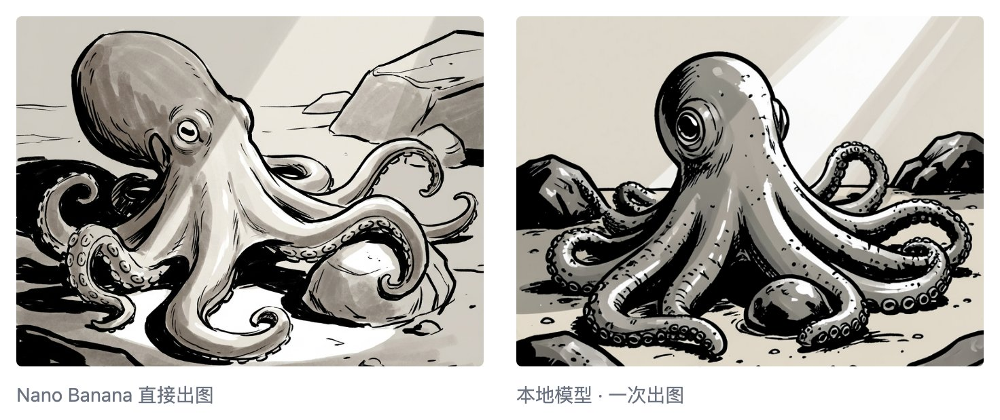
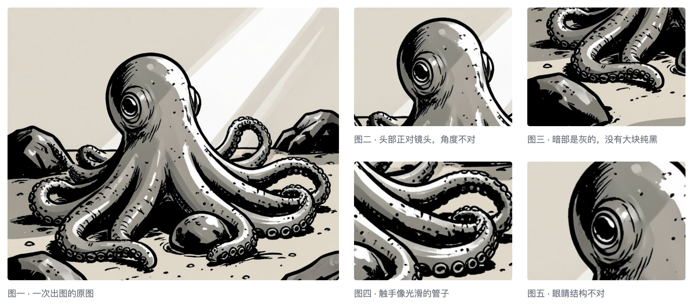
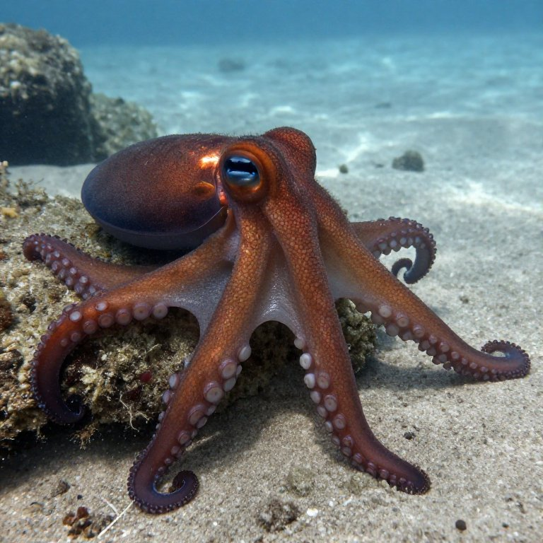
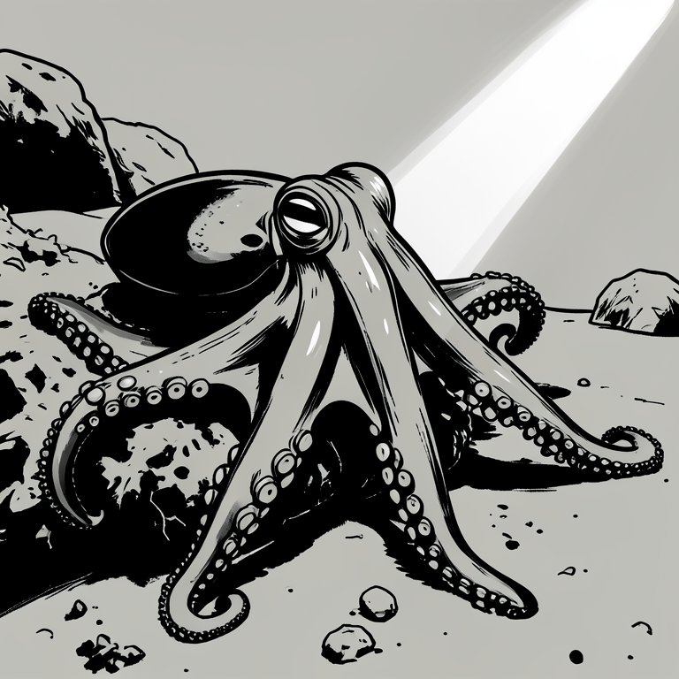
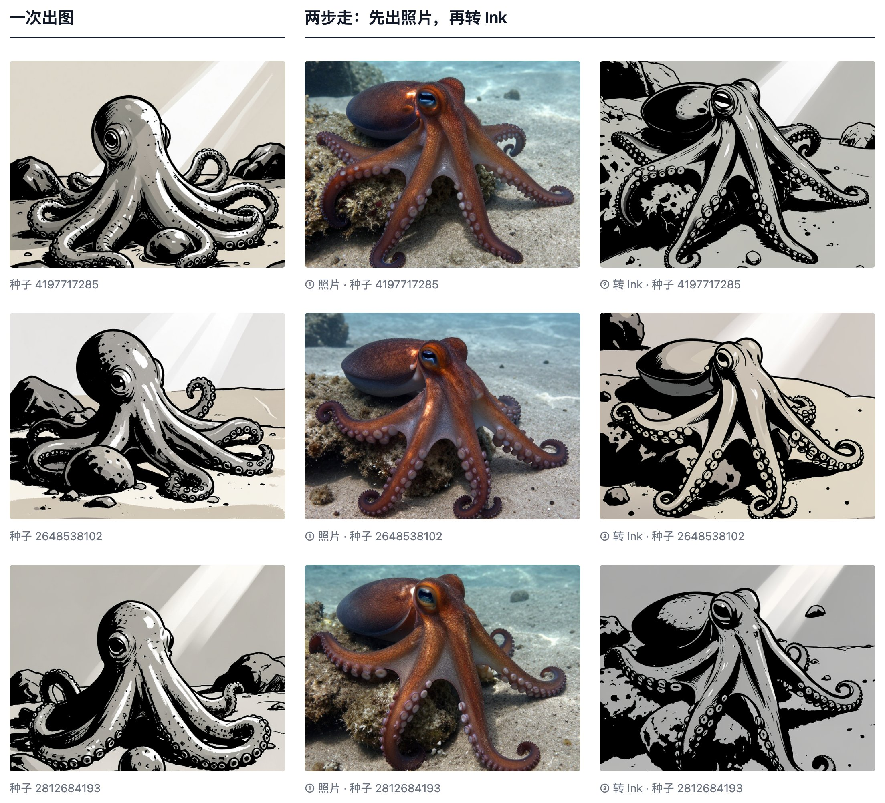

出图和写代码一样，大步拆成小步才好控制
我的文章封面都是那种 Framed Ink 风格的：高对比，黑白风，自然景色。自从换成本地出图模型之后，这种风格和之前 Nano Banana 直接出的效果差了很多。

这次我用了另一个流程：生成实景图，再上风格。
你可能会想：直接让 AI 一次性出图不是更方便？AI 能按照提示词直接生出一个有场景有风格的图。一次生成，时间还省了一半。
的确可以，但效果不好。
比如出来的图片构图不好，或者细节和真实生物不同，那么我还是要再让 AI 出几张，才能抽到满意的效果。

为了更好的控制，我先让 AI 出了一幅实景图。为了保证效果正确，我还特意加上了专门的提示词。

内容满意了之后。我再让 AI 给这个实景图配上风格转换的提示词，引导它往 Framed Ink 风格上靠。

对比下来，两步走的流程效果要好些：

有经验的程序员会尽可能的拆分代码。
这样他就能在拆出来的小功能上加测试。产品的最终效果也会更好。
把同样的做法用在出图上：我可以把出图和风格变换分开，然后为每一步加上验证，我就能保证最终的效果。